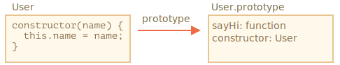

在面向对象的编程中，*class* 是用于创建对象的可扩展的程序代码模版，它为对象提供了状态（成员变量）的初始值和行为（成员函数或方法）的实现。在日常开发中，我们经常需要创建许多相同类型的对象，例如用户（users）、商品（goods）或者任何其他东西。
正如我们在 info:constructor-new 一章中已经学到的，new function 可以帮助我们实现这种需求。
但在现代 JavaScript 中，还有一个更高级的“类（class）”构造方式，它引入许多非常棒的新功能，这些功能对于面向对象编程很有用。
基本语法是：
class MyClass {
// class 方法
constructor() { ... }
method1() { ... }
method2() { ... }
method3() { ... }
...
}然后使用 new MyClass() 来创建具有上述列出的所有方法的新对象。
new 会自动调用 constructor() 方法，因此我们可以在 constructor() 中初始化对象。
例如：
class User {
constructor(name) {
this.name = name;
}
sayHi() {
alert(this.name);
}
}
// 用法：
let user = new User("John");
user.sayHi();当 new User("John") 被调用：
constructor 使用给定的参数运行，并为其分配 this.name。……然后我们就可以调用对象方法了，例如 user.sayHi。
对于新手开发人员来说，常见的陷阱是在类的方法之间放置逗号，这会导致语法错误。
不要把这里的符号与对象字面量相混淆。在类中，不需要逗号。所以，class 到底是什么？正如人们可能认为的那样，这不是一个全新的语言级实体。
让我们揭开其神秘面纱，看看类究竟是什么。这将有助于我们理解许多复杂的方面。
在 JavaScript 中，类是一种函数。
看看下面这段代码：
class User {
constructor(name) { this.name = name; }
sayHi() { alert(this.name); }
}
// 佐证：User 是一个函数
alert(typeof User); // function
class User {...} 构造实际上做了如下的事儿：
User 的函数，该函数成为类声明的结果。该函数的代码来自于 constructor 方法（如果我们不编写这种方法，那么它就被假定为空）。User.prototype 中的 sayHi。当 new User 对象被创建后，当我们调用其方法时，它会从原型中获取对应的方法，正如我们在 info:function-prototype 一章中所讲的那样。因此，对象 new User 可以访问类中的方法。
我们可以将 class User 声明的结果解释为：

下面这些代码很好地解释了它们：
class User {
constructor(name) { this.name = name; }
sayHi() { alert(this.name); }
}
// class 是一个函数
alert(typeof User); // function
// ...或者，更确切地说，是 constructor 方法
alert(User === User.prototype.constructor); // true
// 方法在 User.prototype 中，例如：
alert(User.prototype.sayHi); // alert(this.name);
// 在原型中实际上有两个方法
alert(Object.getOwnPropertyNames(User.prototype)); // constructor, sayHi人们常说 class 是一个语法糖（旨在使内容更易阅读，但不引入任何新内容的语法），因为我们实际上可以在没有 class 的情况下声明相同的内容：
// 用纯函数重写 class User
// 1. 创建构造器函数
function User(name) {
this.name = name;
}
// 函数的原型（prototype）默认具有 "constructor" 属性，
// 所以，我们不需要创建它
// 2. 将方法添加到原型
User.prototype.sayHi = function() {
alert(this.name);
};
// 用法：
let user = new User("John");
user.sayHi();这个定义的结果与使用类得到的结果基本相同。因此，这确实是将 class 视为一种定义构造器及其原型方法的语法糖的理由。
尽管，它们之间存在着重大差异：
首先，通过 class 创建的函数具有特殊的内部属性标记 [[FunctionKind]]:"classConstructor"。因此，它与手动创建并不完全相同。
编程语言会在许多地方检查该属性。例如，与普通函数不同，必须使用 new 来调用它：
class User {
constructor() {}
}
alert(typeof User); // function
User(); // Error: Class constructor User cannot be invoked without 'new'此外，大多数 JavaScript 引擎中的类构造器的字符串表示形式都以 "class..." 开头
class User {
constructor() {}
}
alert(User); // class User { ... }还有其他的不同之处，我们很快就会看到。
类方法不可枚举。
类定义将 "prototype" 中的所有方法的 enumerable 标志设置为 false。
这很好，因为如果我们对一个对象调用 for..in 方法，我们通常不希望 class 方法出现。
类总是使用 use strict。
在类构造中的所有代码都将自动进入严格模式。
此外，class 语法还带来了许多其他功能，我们稍后将会探索它们。
就像函数一样，类可以在另外一个表达式中被定义，被传递，被返回，被赋值等。
这是一个类表达式的例子：
let User = class {
sayHi() {
alert("Hello");
}
};类似于命名函数表达式（Named Function Expressions），类表达式可能也应该有一个名字。
如果类表达式有名字，那么该名字仅在类内部可见：
// “命名类表达式（Named Class Expression）”
// (规范中没有这样的术语，但是它和命名函数表达式类似)
let User = class MyClass {
sayHi() {
alert(MyClass); // MyClass 这个名字仅在类内部可见
}
};
new User().sayHi(); // 正常运行，显示 MyClass 中定义的内容
alert(MyClass); // error，MyClass 在外部不可见我们甚至可以动态地“按需”创建类，就像这样：
function makeClass(phrase) {
// 声明一个类并返回它
return class {
sayHi() {
alert(phrase);
};
};
}
// 创建一个新的类
let User = makeClass("Hello");
new User().sayHi(); // Hello就像对象字面量，类可能包括 getters/setters，计算属性（computed properties）等。
这是一个使用 get/set 实现 user.name 的示例：
class User {
constructor(name) {
// 调用 setter
this.name = name;
}
get name() {
return this._name;
}
set name(value) {
if (value.length < 4) {
alert("Name is too short.");
return;
}
this._name = value;
}
}
let user = new User("John");
alert(user.name); // John
user = new User(""); // Name is too short.从技术上来讲，这样的类声明可以通过在 User.prototype 中创建 getters 和 setters 来实现。
这里有一个使用中括号 [...] 的计算方法名称示例：
class User {
['say' + 'Hi']() {
alert("Hello");
}
}
new User().sayHi();这种特性很容易记住，因为它们和对象字面量类似。
类字段（field）是最近才添加到语言中的。之前，我们的类仅具有方法。
“类字段”是一种允许添加任何属性的语法。
例如，让我们在 class User 中添加一个 name 属性：
class User {
name = "John";
sayHi() {
alert(`Hello, ${this.name}!`);
}
}
new User().sayHi(); // Hello, John!所以，我们就只需在表达式中写 "
类字段重要的不同之处在于，它们会在每个独立对象中被设好，而不是设在 User.prototype：
class User {
name = "John";
}
let user = new User();
alert(user.name); // John
alert(User.prototype.name); // undefined我们也可以在赋值时使用更复杂的表达式和函数调用：
class User {
name = prompt("Name, please?", "John");
}
let user = new User();
alert(user.name); // John正如 info:bind 一章中所讲的，JavaScript 中的函数具有动态的 this。它取决于调用上下文。
因此，如果一个对象方法被传递到某处，或者在另一个上下文中被调用，则 this 将不再是对其对象的引用。
例如，此代码将显示 undefined：
class Button {
constructor(value) {
this.value = value;
}
click() {
alert(this.value);
}
}
let button = new Button("hello");
setTimeout(button.click, 1000); // undefined
这个问题被称为“丢失 this”。
我们在 info:bind 一章中讲过，有两种可以修复它的方式：
setTimeout(() => button.click(), 1000)。类字段提供了另一种非常优雅的语法：
class Button {
constructor(value) {
this.value = value;
}
click = () => {
alert(this.value);
}
}
let button = new Button("hello");
setTimeout(button.click, 1000); // hello类字段 click = () => {...} 是基于每一个对象被创建的，在这里对于每一个 Button 对象都有一个独立的方法，在内部都有一个指向此对象的 this。我们可以把 button.click 传递到任何地方，而且 this 的值总是正确的。
在浏览器环境中，它对于进行事件监听尤为有用。
基本的类语法看起来像这样：
class MyClass {
prop = value; // 属性
constructor(...) { // 构造器
// ...
}
method(...) {} // method
get something(...) {} // getter 方法
set something(...) {} // setter 方法
[Symbol.iterator]() {} // 有计算名称（computed name）的方法（此处为 symbol）
// ...
}技术上来说，MyClass 是一个函数（我们提供作为 constructor 的那个），而 methods、getters 和 settors 都被写入了 MyClass.prototype。
在下一章，我们将会进一步学习类的相关知识，包括继承和其他功能。